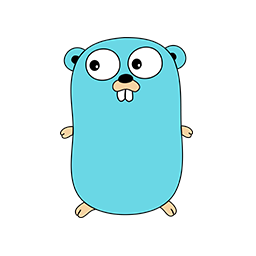

I am a Year 9 IT student at Canberra Grammar School who loves programming simply because it is incredibly cool to realize that when you code, you can build absolutely anything you want from scratch. Having total control over a digital canvas and making a program come alive out of nothing is what makes software development so awesome to experiment with.
Skills
Python
Python is the programming language I have been using for a long time, and it has become my go-to tool whenever I want to just create something.
Because it is a general-purpose language with a massive collection of libraries, I can use it for almost anything. What I love most about Python is how fast it lets me get something working. If I have an idea for a simple project, a system automation, or I just want to see if something will work, I can prototype it in Python instantly to see if the logic actually functions.
Once I prove the concept works under the hood, I can then go ahead and build it out properly or port it over to other platforms and languages. It is the ultimate language for testing my programming skills.
Golang
Go has become my absolute main programming language whenever I am building larger, more complex projects. Even though Google originally engineered Go specifically for cloud networking and massive backend server infrastructures, I don't use it for that purpose. Instead, I love using it as a general-purpose language for my own large-scale projects. The main reason I choose Go over everything else for big projects is its incredible speed, performance, and efficiency. It gives me the structure and power needed to keep code completely clean and organized when a project starts growing out of hand, making it the perfect language to use.
